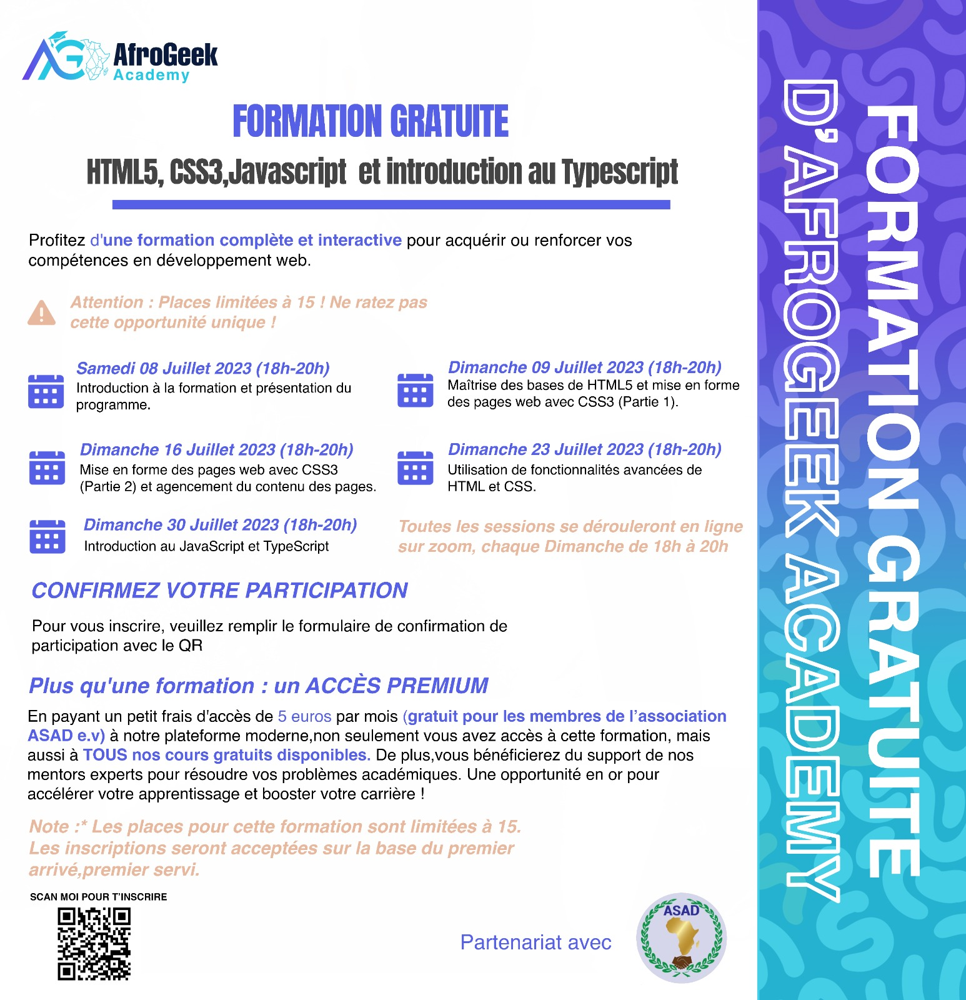

Tout au long de ce parcours, vous serez amené à construire votre portfolio en ligne, une vitrine de vos compétences et de vos projets. Comme sur cv.geek237.com vous pourrez présenter vos projets, partager votre progression et mettre en avant votre unicité en tant que développeur web
